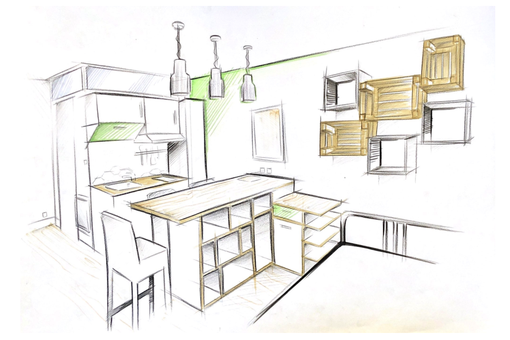
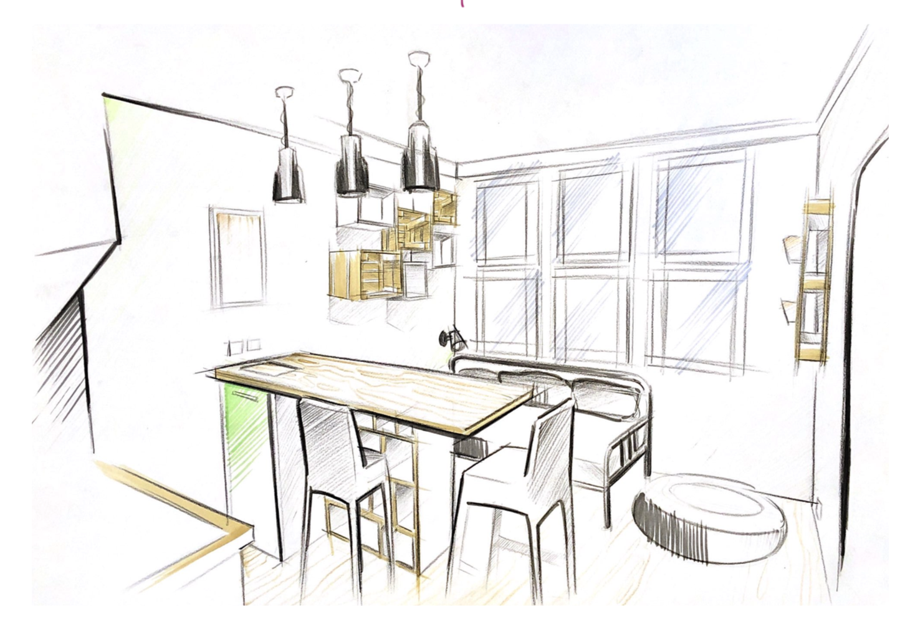

Léa Croizard Designer
Je suis née à Aix en Provence mais j’habite dans un village au bord de la mer. Dans ma vie, j’ai deux grand centre d’intérêt la mer et le design. Depuis toute petite, je fais de la voile avec mon père et ma famille. La voile est pour moi un moyen de m’échapper du quotidien, de se recentrer sur les choses essentielles, de s’accorder avec la nature et de pouvoir voyager. C’est l’occasion pour moi d’être avec ma famille et de vivre de nouvelle expérience. Et pour le design voyez par vous-même.
I love kedgeNouveau matériau: Le Biocamp
Inspiré par le gaspillage domestique, j’ai voulu donner une nouvelle vie aux déchets quotidiens. Je me suis rendu compte que tous les foyers produisaient des épluchures de légumes comme déchets et qu’ils n’étaient jamais réutilisés et finissaient à la poubelle. J’ai mélangé des épluchures broyées, de la farine et de l’eau pour avoir une pâte. A l’aide de moules, j’ai pu créer de la vaisselle biodégradable pour les pique-niques. L’intérêt de cette vaisselle est qu’elle participe à un cycle vertueux : les déchets sont réutilisés pour créer de nouveaux objets (la vaisselle), qui elle meme peut se dégrader seule dans la nature (si elle oubliée lors du pique nique), devenir de l’engrais et ainsi participer au développement de nouvelles plantes et surtout ne pas redevenir un déchêt non dégradé.
La résidence: "Kafew"
Design en équipe d’un appartement meublé de 18m2 dans une résidence étudiante pour l’entreprise «Global Exploitation». Nos objectifs : Un appartement convivial, confortable, fonctionnel, chaleureux où l’on se sente en sécurité Nous avons travaillé sur l’optimisation et l’organisation de l’espace, et la fluidité du sens de circulation pour le rendre spacieux et agréable. Nous avons donc créé du mobilier spécifique comme la console, qui a une triple fonctionnalité : plan de travail pour cuisiner, table pour déjeuner et bureau pour étudier. Cette console a été modélisée sur SolidWorks. Pour la restitution, nous avons créé une maquette réduite de l’appartement et de son agencement, mobilier inclus.
 